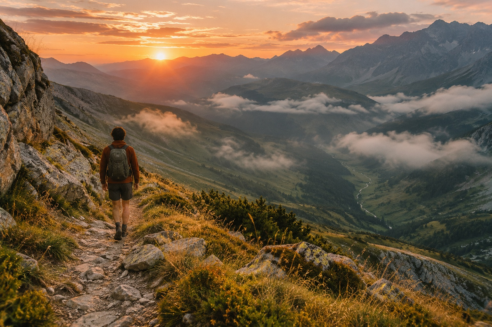
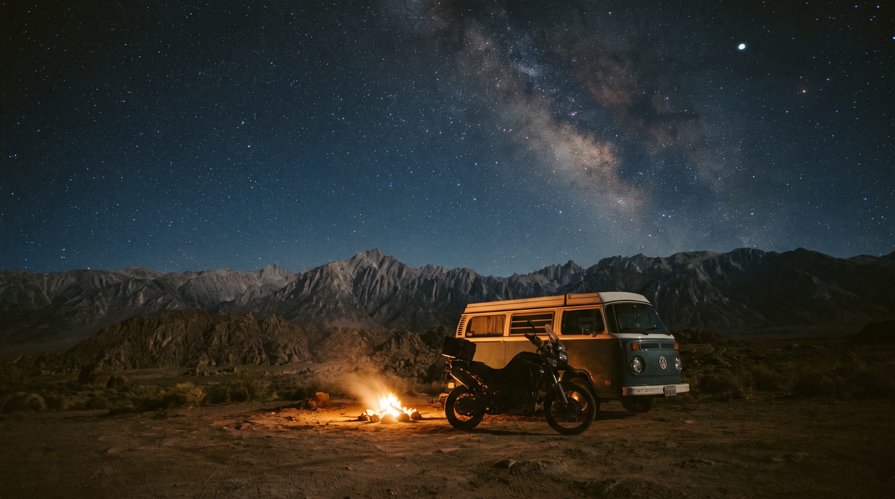

Il y a des instants où je me sens particulièrement vivant. Parfois, c’est en franchissant la ligne d’arrivée d’un défi que je m’étais lancé. D'autres fois, c'est en plein milieu, quand la route se complique et qu'il faut prendre le temps de chercher comment continuer. Et puis, il y a des moments beaucoup plus simples : s'arrêter devant un paysage, y rester plus longtemps que prévu, et se laisser submerger par l'émotion sans trop savoir pourquoi.
En repensant à tout cela, j’ai compris à quel point le goût de l’aventure était ancré en moi. À 50 ans, j’ai décidé qu'il était temps de lui faire toute sa place. Plutôt que d'attendre sagement la retraite, j'ai fait le choix de tout vendre pour partir vivre ce qui m'anime vraiment.
On n’a qu’une vie, et j'ai envie de la vivre pleinement. Pour moi, cela passe par une question essentielle que l’on oublie trop souvent : au milieu de toutes les idées qu'on nous transmet sur ce qu’il faudrait faire ou sur la personne qu’il faudrait devenir, qu’est-ce que j’ai vraiment envie de vivre, moi ?
C’est de cette réflexion qu’est né Cyril en Voyage. L'idée est de raconter ce qui me touche quand je pars, du plaisir de préparer une expédition jusqu’aux imprévus qui finissent souvent par en faire les meilleurs souvenirs. Sur ce blog, je prends le temps de revenir sur ces expériences. Sur YouTube, j’essaie de partager ce que j’ai ressenti à travers les images et les sons de ces moments-là.
Si, en lisant un récit ou en regardant une vidéo, quelqu’un retrouve un peu de cette émotion et se dit qu’il aimerait tenter, à sa façon, un projet qui lui trotte dans la tête depuis longtemps, ce sera ma plus belle réussite.
Selon l’envie et l’endroit, je pars à moto, en van, à pied ou en kayak — toujours avec ma caméra pour en ramener une histoire à partager.

